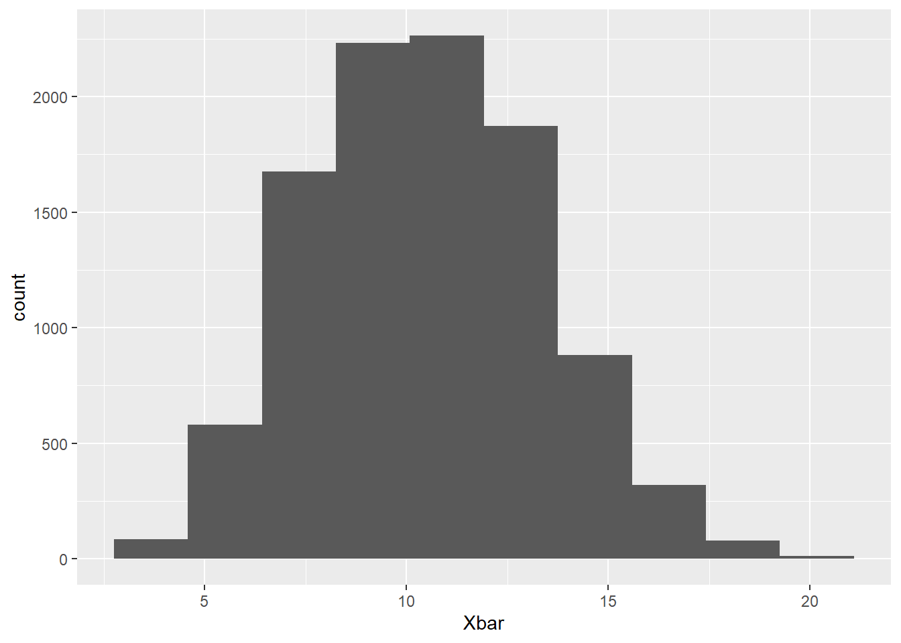

pop <- c(3, 5, 6, 6, 8, 11, 13, 15, 19, 20)
N <- 10^4
Xbar <- numeric(N)
for (i in 1:N)
{
samp <- sample(pop, 4, replace = TRUE)
Xbar[i] <- mean(samp)
}
ggplot() + geom_histogram(aes(Xbar), bins = 10)
mean(Xbar < 11)[1] 0.5556N <- 400 # population size
n <- 5 # sample size
finpop <- rexp(N, 1/10) # Create a finite pop. of size N=400 from
# Exp(1/10)
ggplot() + geom_histogram(aes(finpop), bins = 12) # distribution of your finite pop.
mean(finpop) # mean (mu) of your pop.[1] 10.52696sd(finpop) # stdev (sigma) of your pop.[1] 10.98211[1] 4.911349[1] 4.886669Xbar <- numeric(1000)
for (i in 1:1000)
{
x <- sample(finpop, n) # Random sample of size n (w/o replacement)
Xbar[i] <- mean(x) # Find mean of sample, store in my.means
}
ggplot() + geom_histogram(aes(Xbar), bins = 12)
df <- data.frame(Xbar)
ggplot(df, aes(sample=Xbar)) + stat_qq() + stat_qq_line()
mean(Xbar)[1] 10.75019sd(Xbar) # estimated standard error of sampling[1] 5.102043 # distribution